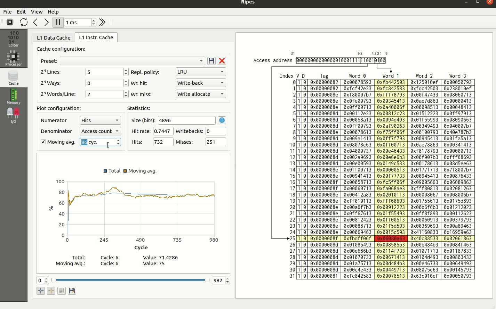
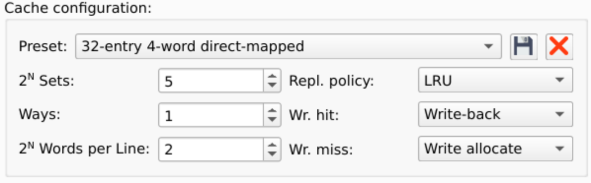
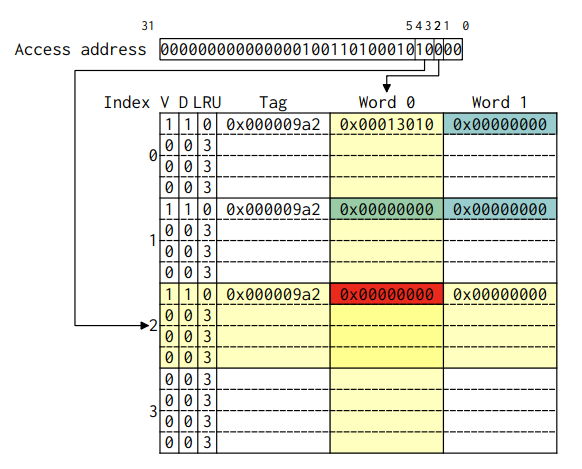
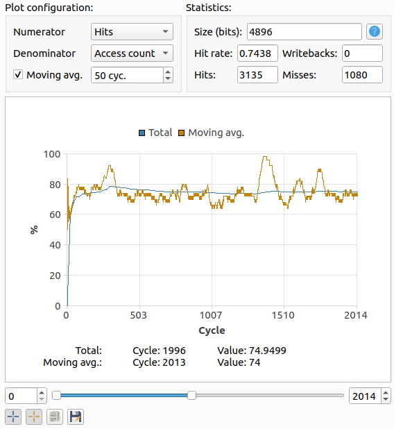

แท็บ Cache
เครื่องมือจำลอง L1 cache ทั้งฝั่ง data (L1D) และ instruction (L1I) สามารถปรับแต่งโครงสร้าง cache และวิเคราะห์ผลกระทบต่อประสิทธิภาพได้

หลักการทำงาน
แท็บ Cache ของ Ripes ทำงานในแบบ trace-based simulation — ตัว processor model จะ ไม่ เข้าถึง cache โดยตรง แต่ตัว cache simulator จะดู memory access ของ CPU ทุก cycle แล้วนำมาจำลองการทำงานของ cache
- Ripes ไม่ จำลอง cache access latency ดังนั้นไม่สามารถบอก execution time ที่แท้จริงได้
- บอกได้แค่ hit rate, miss rate, writeback rate
- แม้ตั้ง write-back policy ค่าที่ "dirty" ใน cache จะปรากฏใน memory view ด้วยเสมอ (Ripes เขียนทุก write ลง main memory)
การตั้งค่า Cache

| พารามิเตอร์ | ความหมาย | หน่วย |
|---|---|---|
| Ways | Associativity ของ cache (เก็บเป็น power of 2)
ways=0 → 1-way (direct mapped)
ways=1 → 2-way set associative
ways=2 → 4-way set associative |
เลขชี้กำลังของ 2 |
| Sets | จำนวน cache set กำหนดขนาดของ index field | เลขชี้กำลังของ 2 |
| Words per Line | จำนวน word ในแต่ละ cache line กำหนดขนาดของ word offset | เลขชี้กำลังของ 2 |
| Wr. hit / Wr. miss | Cache write policy เช่น write-through, write-back, write-allocate, no-write-allocate | — |
| Repl. policy | Replacement policy เช่น LRU, Random | — |
นอกจากนี้มี preset ที่กำหนดมาให้ใช้ทันที และยังสามารถบันทึก preset ของตัวเองได้
การอ่าน Cache View

- Cache sets — คั่นด้วยเส้น ทึบ แต่ละแถวมี index ของ set
- Cache ways — อยู่ภายในแต่ละ set คั่นกันด้วยเส้น ประ
โดยปกติแบบเรียนจะวาด set-associative cache เป็นตารางแยกตาม way Ripes ใช้รูปแบบที่เทียบเท่ากันแต่รวมเป็นตารางเดียว:
คอลัมน์ใน Cache View
- V — Valid bit (cache line นี้มีข้อมูล valid หรือไม่)
- D — Dirty bit (cache line นี้ถูกเขียน โดยใช้ write-back policy หรือไม่)
- LRU — แสดงเมื่อ
ways > 0และใช้ LRU policy ค่ายิ่งสูง = ใกล้ถูก evict - Tag — ค่า tag ของ cache line
- Word # — ข้อมูลที่ cache เก็บไว้
การอ่าน Highlight
- เมื่อ cache ถูก access — แถวของ set และคอลัมน์ของ word จะ highlight สีเหลือง
- สีเขียว = cache hit
- สีแดง = cache miss
- สีฟ้า = ค่าที่ dirty (เมื่อใช้ write-back policy)
- เลื่อนเมาส์บน word เพื่อดู physical address
- คลิกบน word เพื่อกระโดดไปยัง memory tab ที่ address นั้น
สถิติและกราฟ Cache

Ripes บันทึกข้อมูลทุก cycle:
- Writes — จำนวนครั้งที่ access cache เพื่อเขียน
- Reads — จำนวนครั้งที่ access cache เพื่ออ่าน
- Hits / Misses — จำนวน hit/miss ทั้งหมด
- Writebacks — จำนวนครั้งที่ cache line ถูก write กลับเข้า memory
- Access count — จำนวน access ทั้งหมด (= reads + writes)
เลือก Numerator และ Denominator เพื่อ plot อัตราส่วน เช่น เลือก Hits/Access count จะได้ hit rate ตามเวลา
ตัวอย่าง: ผลของการเลือก Cache แบบต่าง ๆ
โปรแกรมตัวอย่างที่ access memory ด้วย stride เฉพาะ:
.data
stride: .word 512 # ก้าวกระโดดทีละกี่ word
accessesPerTurn: .word 2
turns: .word 128
baseAddress: .word 4096
.text
cacheLoop:
lw a6, turns
lw a7, baseAddress
lw a2, stride
lw a0, accessesPerTurn
# ... (วน access memory ตาม stride)ลองที่ 1: 32-entry 4-word direct mapped cache
- เปิด Memory tab แล้วเลือก preset "32-entry 4-word direct mapped cache"
- กด Run
- ได้ hit rate =
0.01154(ต่ำมาก!)
เหตุผล: stride = 512 word ทำให้ทุก access map ลง set เดียวกัน เกิด conflict miss ทุกครั้ง
ลองที่ 2: 32-entry 4-word 2-way set associative
- เปลี่ยน preset เป็น "32-entry 4-word 2-way set associative" (ขนาด cache เท่าเดิม!)
- กด Run
- ได้ hit rate =
0.9885(สูงมาก!)
เหตุผล: ทั้ง 2 address ที่ access สามารถอยู่ใน 2 way ของ set เดียวกันได้ ไม่มี conflict miss